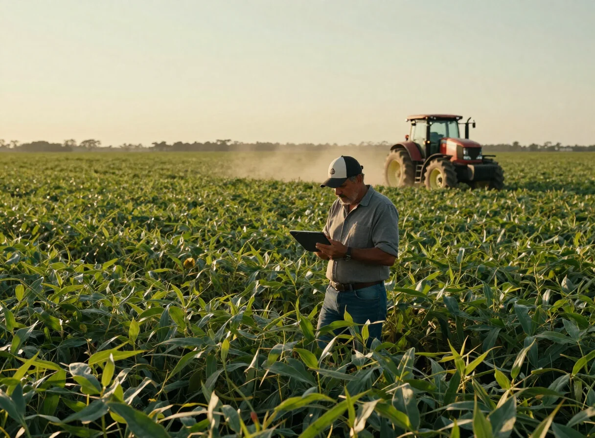
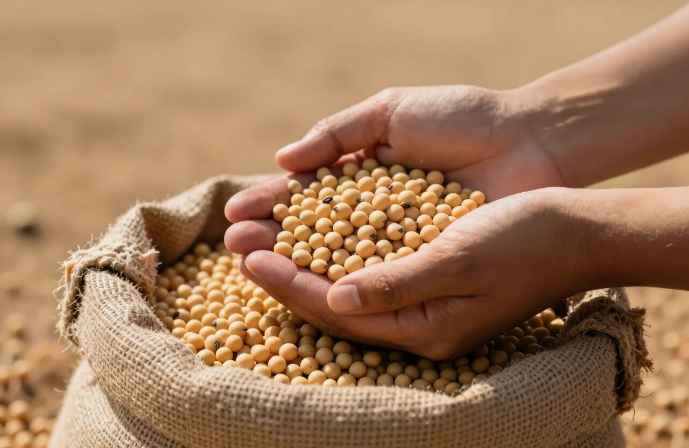

Contabilidade estratégica para o agronegócio e empresas em Mato Grosso
Solidez técnica e proximidade com a sua realidade. Do produtor rural à empresa em expansão, traduzimos a complexidade fiscal em decisões seguras.

Diferencial GWF
Contabilidade para o produtor rural não cabe em modelo genérico. A GWF conhece a realidade do agronegócio mato-grossense e conduz cada obrigação com precisão técnica e linguagem clara.

Serviços
Soluções contábeis completas, sob medida para o seu negócio
Sobre a GWF
A GWF Consultoria e Contabilidade nasceu em Rondonópolis com um propósito claro: unir a solidez técnica das grandes estruturas à proximidade de quem conhece de perto a realidade do produtor rural e do empresário mato-grossense.
Contato
Vamos conversar sobre o seu negócio
Nossos portais
Acesso rápido aos nossos portais